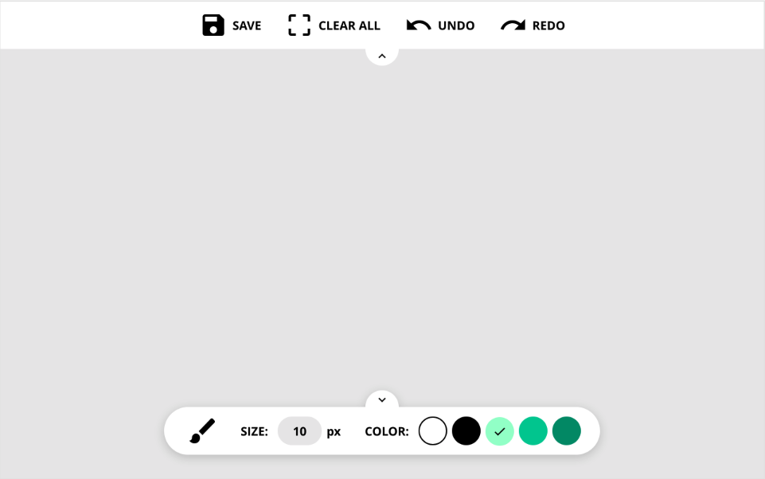
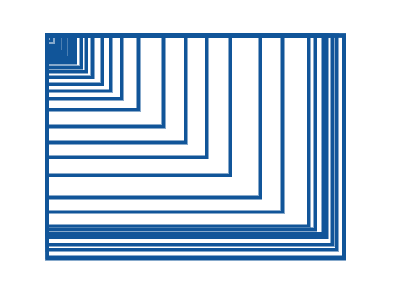

JS地下城：7F-畫版

規則
- 【特定技術】繪圖區請使用 Canvas 來設計，上方的控制列與下方的畫筆調整可不用
SAVE ：點擊後可直接下載轉出的 PNG 圖片
CLEAR ALL：清除畫版樣式
UNDO、REDO：上一步、下一步
點擊箭頭時，功能列介面皆可進行收闔 - 【擴充功能】請再自行增加「兩個功能」
這次最大的收獲應該就是克服了 canvas 的心理障礙 XDD
寫完後發現 其實也還好嘛 (笑～
canvas 起手式
先在 html 上 訂出一塊 canvas 的畫布 決定這次的繪畫範圍
1 | <canvas></canvas> |
設定畫布
1 | var $canvas = document.querySelector('canvas'); |
這此的繪圖環境是以 2D 方式呈現 所以 getContext 上 就是輸入 2d
設定好後 接下來我們就必需緊抓著 ctx 這個名字不放
設定筆畫樣式
1 | ctx.lineWidth = 10; //設定線寬 |
繪製路徑
1 | ctx.beginPath(); //開始繪製 |
當我們知道線條是這樣畫出來時
那我們就能開始思考
當滑鼠按下時 去取得當下的坐標位置，移動時，邊存儲存邊繪置當下移動的路徑
如此反覆循環，即可繪製出
滑鼠事件
1 | // mousedown 當滑鼠按下時 |
如此一來 就能繪製出一條隨心所欲的路徑
影像儲存
1 | document.querySelector('.save').addEventListener('click', function() { |
影像匯入
1 | document.querySelector('[type="file"]').addEventListener('change', function() { |
了解 影像儲存 跟 匯入後
做一個陣列 把 繪製完後 的圖像 存 base64 存到陣列裡
就能處理上一步一下步的動作囉
矩型繪製
在畫矩形方面 試過了很多方試 一開始在 mousemove 上直接畫 但發現矩形會一直重疊
如下圖

找不到如何清除掉上一個矩形的方式，後來鎖性先使用 css 繪製，在 mouseup 後 再把整塊矩形用 canvas 畫上去
目前還卡在無法順利的將文字輸入，囧~~~ 希望有高手大大能夠指點一下了
基本大致就是這樣囉 其他的就留給各位慢慢去探索啦
此篇文章 若有新的收穫會再持續更新
Donate
如果這整篇文章有幫助到你的話 也歡迎請我喝杯飲料 ^_^